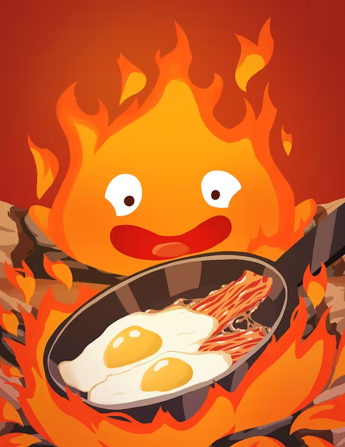
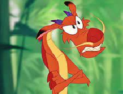

Tengo dos perritos de la raza Dachshund (salchichas) y se llaman Booster y Coby. Booster es papá de Coby
y mi favorito es Coby porque somos muy aoegados el uno con el otro. Algo curioso de coby es que en cuanto
me ve frente a la computadora comienza a ladrar para que le haga caso y lo deje suburse a mis piernas, por
lo regular trabajo con el a lado mío o al menos cerca. Ellos son mi adoración y la parte favorita de mis
días son cuando salimos a pasear en las mañanas y en las tardes y esta el ruido de los pajaritos de fondo
o cuando Coby me trae la pelota a donde sea que esté para que se la lance.
Algo curioso de mi es que paso por etapas en cuanto a mis gustos en general. Sucede que un mes escucho solo
Rock en inglés y adoro pintar y al siguiente mes me gusta leer, jugar baloncesto todo el tiempo y mi obseción
es el reguetton o las canciones de señora para hacer que hacer. Creo que mis cotastentes cambios son la razón
del porque me cuesta tanto el poder elegir y/o tener cosas favoritas.
| personajes | imagen | ¿por qué esta en este top? |
|---|---|---|
| Cristina Yang | Me encanta Cristina porque creo que es muy inteligente,
directa y sabe lo quiere. A parte es la mejor. |
|
| Ban | Me encanta su personalidad y su humor, que a pesar de
que parece ser una roca sin sentimientos resulta que si los tiene. Lo asemejo demaciado a como soy yo. |
|
| Calcifer |  | Calcifer se me hace un personaje super memorable y al igual que
con ban me encanta su humor y la forma en que se comunica, es tierno y bonito |
Mushu |  | Este personaje es de mis favoritos desde la infancia porque recuerdo
como me moría de risa cuando el decía algún chiste en la película. De hecho mi parte favorita de Mulan es la escena donde mushu dice "¡Deshonrada tú!, ¡deshonrada tu vaca!" |
Nota:
Me costo trabajo realizar la selección del contenido de mis listas porque como
mencioné en la parte de los párrafos no suelo tener cosas favoritas, y en especial
con la de la comida ya que no tengo una buena relación con ella. Es algo en lo que
sigo trabajando y como este trabajo trata sobre contarles un poco de quien soy me
pareció buena idea añadir esto.
Y ahora si para finalizar a continuación:
Una de las canciones que más he estado escuchando
ultimamente
Gracias por leer :)